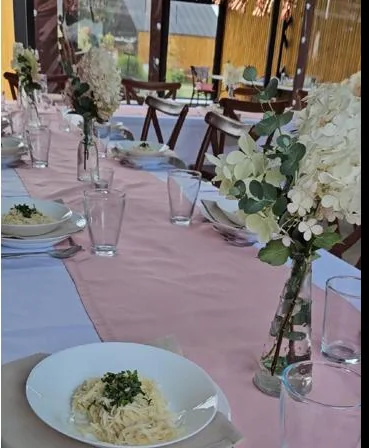

Komunia, urodziny, stypa czy spotkanie firmowe — ugotujemy, przywieziemy i zadbamy o to, żeby nikt nie wyszedł głodny.

Obsługujemy imprezy okolicznościowe w naszej sali oraz catering z dowozem. Menu układamy wspólnie z Tobą — pod liczbę gości i budżet.
Opowiedz nam o swojej uroczystości: termin, liczba gości, okazja. Doradzimy, co sprawdza się najlepiej.
Wspólnie dobierzemy dania i porcje pod Twój budżet — od zup, przez pieczyste, po domowe wypieki.
W dniu uroczystości wszystko jest gotowe na czas — u nas w sali albo pod wskazanym adresem.
Terminy na weekendy rozchodzą się szybko. Zadzwoń i sprawdź dostępność — wycena jest bezpłatna i niezobowiązująca.